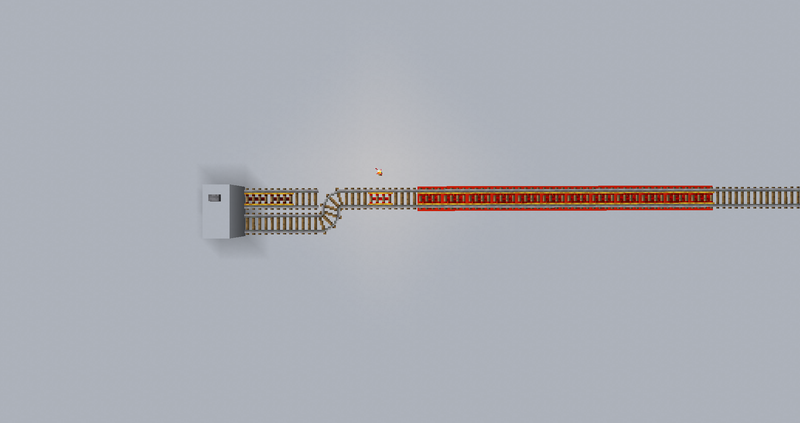
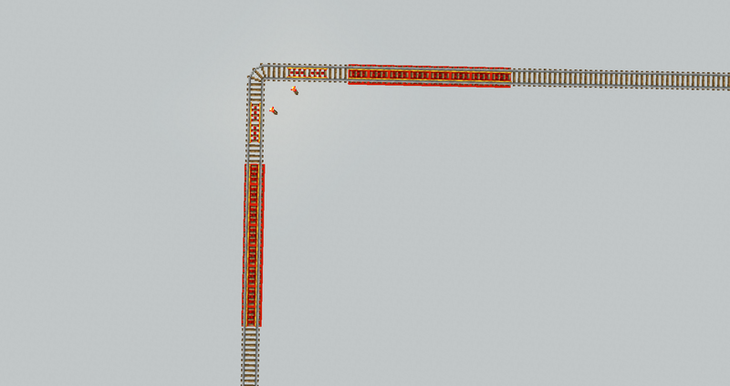
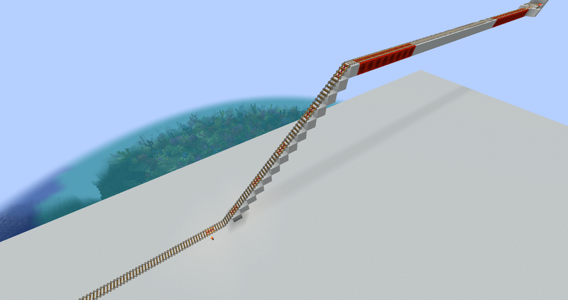

HSRail design spec
Line Ends

THe line end shall consist of a double normal powered rail powered by a player accessable button along with a curve to avoid colisions. There must be a single always on powered rail to slow down incoming trains. The end should be followed by a 12 block section of high speed powered rails to allow a staionary minecart to get up to full speed.
straight aways
in between elements of the rail, a high speed powered rail should be placed at leasst once every 32 blocks.
Curves

A curve must have an 8 block long high speed powered rail line on the incoming and outgoing side of the curve. The interior of the curve must have 2 regular powered rails to slow down the train before taking the turn then to speed it back up to 8m/s.
Elevation changes

Rule of thumb is you want to keep your track as flat as possible, but when you should need an elevation change, do so drasticly. At the bottom of the hill there should be a single regular powered track to slow down the incoming upward bound trains. The slope should be straight up, you can do this however you want as long as the train goes up. At the top therte should be an 8 long high speed rail speed pad to speed the upward bound trains back up, this will also act as a speed pad that will derail downward bound trains and throw them to the bottom track.